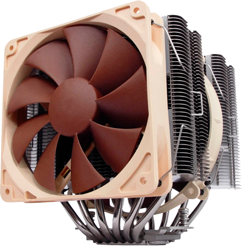
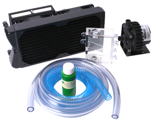
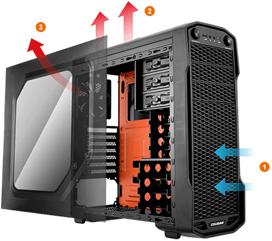

Introducción:
En cuestión de refrigeración se están llevando a cabo muchos estudios en distintas direcciones ya que la refrigeración actual, tanto por aíre como líquida se dejará de usar en un futuro no muy lejano básicamente por la tendencia a reducir el tamaño de los dispositivos y al hecho de que ambas técnicas son muy voluminosas.
 A la hora de diseñar un equipo refrigerado por aire había que tener en cuenta los principios físicos: el aire caliente sube, el frío baja. Con algunas de las nuevas tendencias esto no será necesario.
